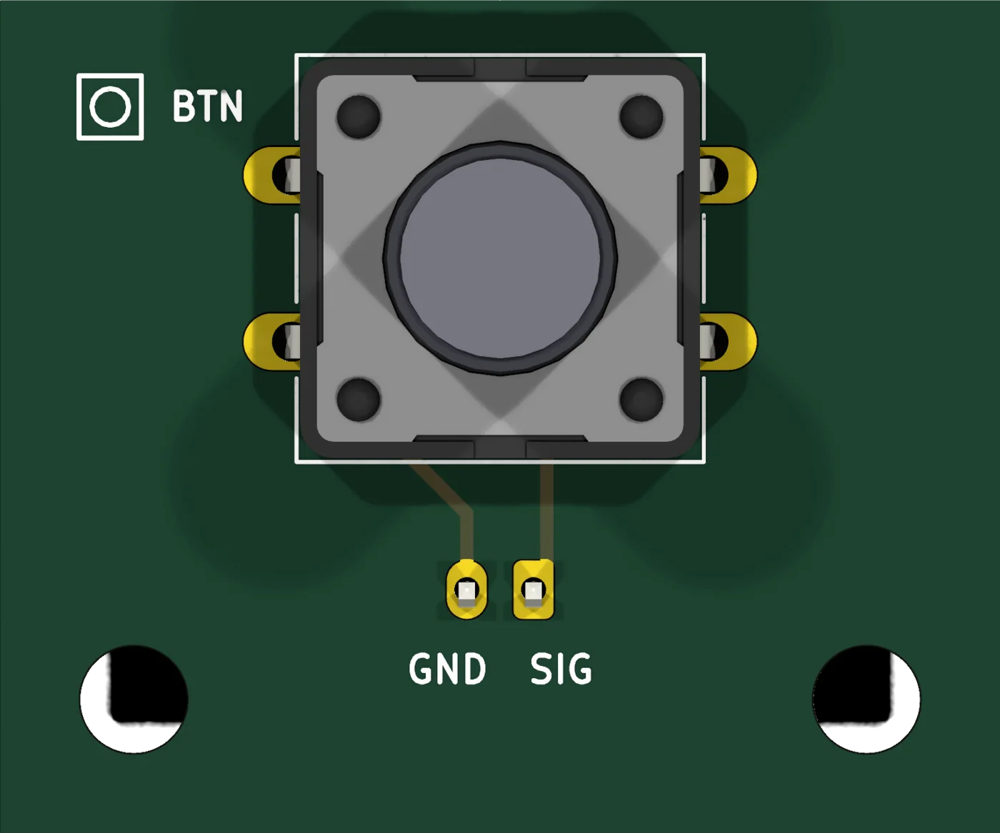
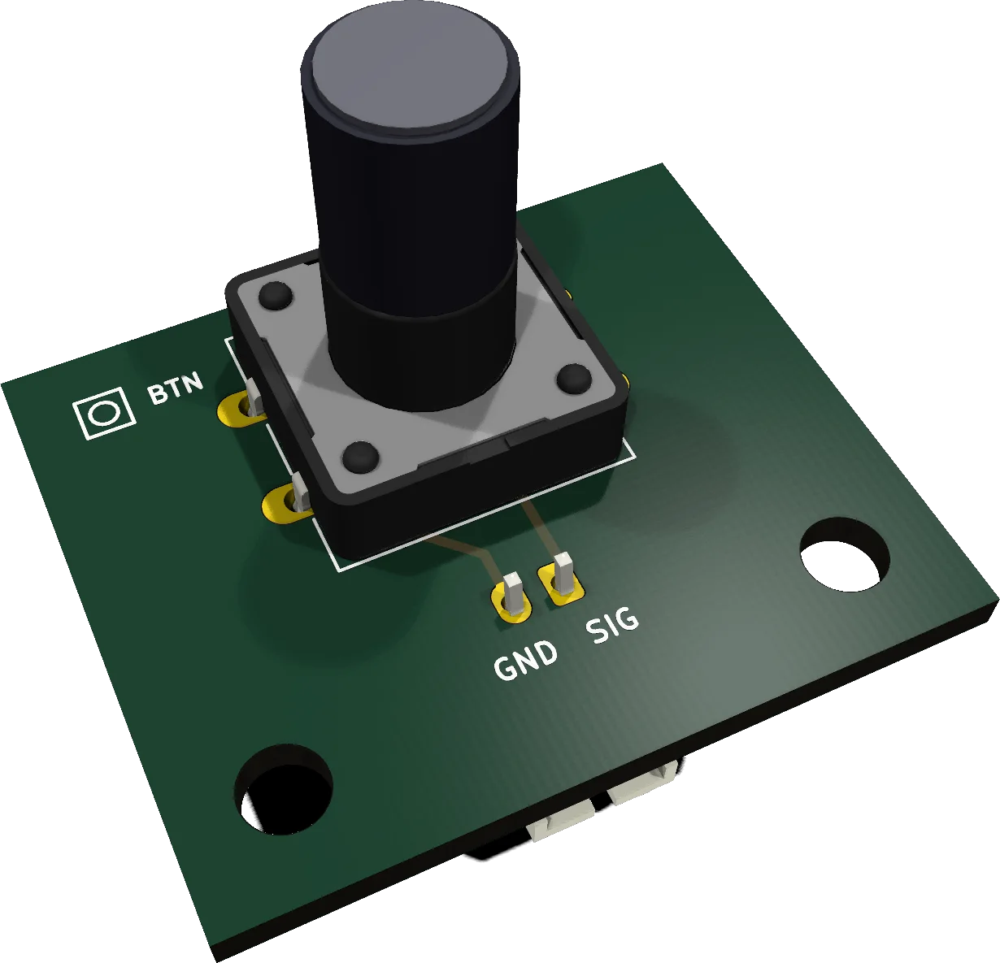
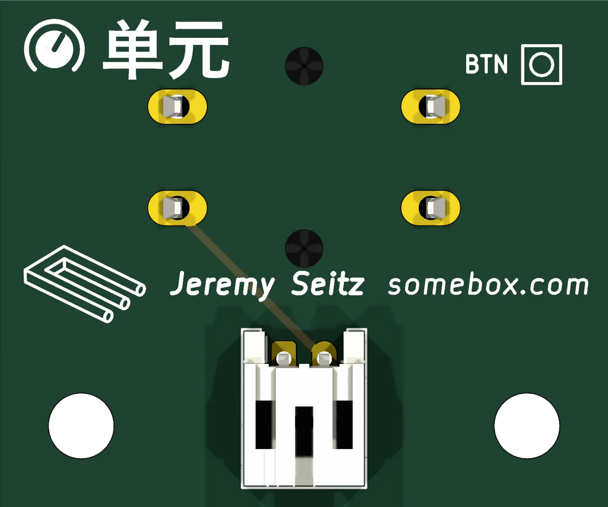
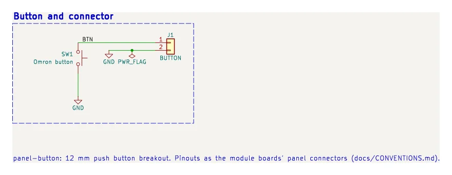

Button breakout: one 12 mm push button on a lead
A small board for one 12 mm tactile switch whose own round button comes through the panel, with a 2-pin JST PH connector on its back.
A small board for one 12 mm tactile switch, 14 mm tall, with its own round button that comes through the panel's 7.2 mm hole, so it needs no cap. A 2-pin JST PH connector on the back carries the signal and ground; the module pulls the signal up and debounces it. The envelope's PUSH button uses it.
The button stands a little proud of the panel with very little clearance in the hole, so the breakout has to be held square behind it, by a printed holder on its two M3 holes. Not built yet.
- Status
- Being made
- Version
- v1.1.2 (2026-10-25)
- Board
- 30 × 25 mm, 2 layers
- First order
- 5 bare boards
- Progress
- follow its tracking issue



What it does
- One 12 mm tactile switch, 14 mm tall, with a 6.7 mm round button and no cap.
- Designed to stand 2.4 mm proud of the panel, with 0.25 mm clearance all round in its 7.2 mm hole.
- A 2-pin JST PH side-entry connector on the back: 1 signal, 2 GND.
- 30 × 25 mm; the plunger on the centre line, 7.75 mm from the top.
- Two M3 holes, 4 mm in from the sides and the bottom, 22 mm apart.
Pins
| 1 | SIG |
| 2 | GND |
Wiring and setup
- A straight-through 2-pin PH lead to the module's button connector.
- The legend on the front, left to right: GND, SIG.
- The pull-up and the debounce are on the module.
- Hold it square under its hole with a printed holder on its M3 holes.
Limits and open questions
- Not built yet.
- With so little clearance in the hole it needs a printed holder, which I haven't drawn yet.
Development notes
- I changed the switch after checking the stack behind the panel. The usual 12 mm switch's round cap is 9.5 mm across, too wide for the hole, and it would have met the back of the panel. The taller switch with its own button fits the same footprint.
Schematic
The schematic as drawn, with each chip named by its function rather than its part number. The design isn't open source yet, so there are no files to download.


Would you use a BTN? A thumbs-up on its tracking issue is how I count interest, and you can subscribe there to follow its bring-up. Questions and ideas go to the discussions.